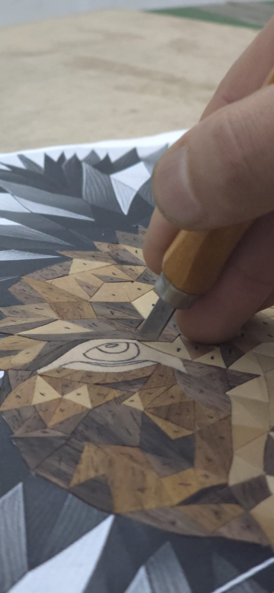

Perché un Intarsio Richiede Settimane, Non Ore
Ogni opera VaCa Marquetry nasce da impiallacciature di legno naturale, scelte e tagliate a mano, tassello dopo tassello: niente sagome laser, nessuna scorciatoia.
Dall’Idea all’Opera Finita
Foto e Progetto
Ogni opera nasce da un’immagine di riferimento e da uno studio della composizione.
Scelta del Legno
Le impiallacciature vengono scelte per venatura, tono e colore, secondo le esigenze della composizione.
Taglio a Mano di Ogni Tassello
Ogni singolo tassello è tagliato a mano: un solo ritratto può richiederne da 400 a oltre 900.
Incastro e Assemblaggio
Ogni tassello viene incastrato al suo posto e l’immagine prende forma pezzo dopo pezzo, come un mosaico.
Levigatura e Finitura
La superficie viene levigata e rifinita con uno strato protettivo che la preserva nel tempo.
Cornice
L’opera finita viene incorniciata e preparata per le fotografie, la certificazione e la spedizione.
Glossario delle Essenze
Noce
Toni scuri e intensi, usati per profondità e contrasto.
Rovere
Venatura marcata e visibile, spesso usata per texture e struttura.
Acero
Chiaro, a grana fine: usato per le luci e i toni chiari.
Wengé e Mogano
Toni profondi e caldi per le ombre e i contrasti più decisi.
Il Processo in Fotografie




Commissiona un’Opera Originale
Ogni commissione inizia con una conversazione privata e un’anteprima del tuo ritratto, preparata entro 24 ore.
Inizia il Tuo RitrattoVuoi saperne di più? Leggi una breve guida alla storia e alla tecnica dell’intarsio.